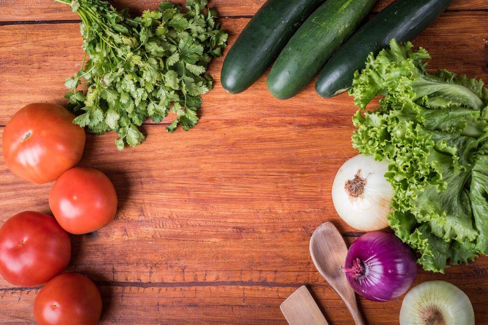
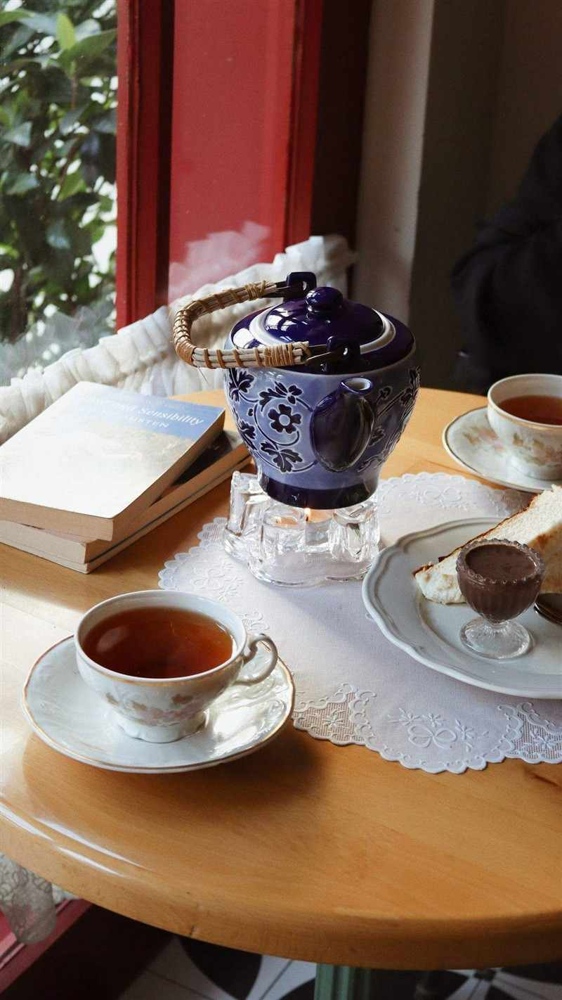

ふわふわのオムライス
ソースを選ぶ楽しみも。
【要確認：オムライスの種類・ソースの種類】
長野県上田市・本郷
住宅街に、ひっそりと。
ふわふわのオムライスと、前菜のランチ。
友だちの家を訪ねるような、お昼のひととき。
ランチ 月〜土 11:00〜14:15
ディナー 土 17:30〜21:00 ／ 日曜定休
営業時間の要確認事項を見る
ランチ 月〜土 11:00〜14:15
ディナー 土 17:30〜21:00 ／ 日曜定休
【要確認：月曜営業の有無・ランチのラストオーダー・金曜ディナーの有無】
ABOUT US
上田市本郷の住宅地にある、一軒家の洋食店。
口コミでは、ふわふわのオムライスや、前菜から楽しめるランチが親しまれています。
ご夫婦とスタッフのあたたかな接客や、友人の家のようにくつろげる雰囲気も、訪れた方の声から伝わってきます。
【要確認：お店の想い・開店のこと】
ソースを選ぶ楽しみも。
【要確認：オムライスの種類・ソースの種類】
前菜4種とメイン、1ドリンク。
【要確認：セット内容と価格】
個室でのお集まりもご相談を。
【要確認：個室の人数・利用条件】
LUNCH TIME
前菜からメインまで。お昼ごはんを、ゆっくり楽しむ。

ランチセット
【要確認：セット内容と価格】
メニューは口コミの傾向をもとにした掲載案です。
現在の提供内容は店舗への確認が必要です。
4種類ほどから選べるソース。
ハーフ＆ハーフも選択できるとの声があります。
【要確認：ソースの種類・ハーフ＆ハーフの提供可否】
普通 ／ 中盛り ／ 大盛り
【要確認：量の選び方と追加料金】
内容は季節によって変わることがあります【要確認】

SPECIAL MOMENTS
お食い初め・七五三などのお祝いや、
ご家族・グループでの会食もご相談ください。
個室のご利用については、お電話でどうぞ。
【要確認：個室の人数・利用条件】
【要確認：お祝い会食・宴会のプラン】
【要確認：子連れ対応・お子様用の椅子】
ACCESS & INFORMATION
初めてお越しの方は、地図をご確認ください。
| 月〜金 | 11:00〜14:15 ランチ |
|---|---|
| 土 | 11:00〜14:15 17:30〜21:00 |
| 日 | 定休日 |
【要確認：月曜営業の有無・ランチのラストオーダー・金曜ディナーの有無】
〒386-1323
長野県上田市本郷1553-2
【要確認：番地（1553-2／1552-2）】
上田電鉄別所線「神畑駅」から徒歩5〜10分
【要確認：駐車場の有無と台数】
【要確認：お支払い方法】
住宅地の中の一軒家で、道路からは見えにくい場所にあります。地図アプリで場所をご確認のうえお越しください。
【要確認：目印・曲がる場所・駐車場の位置】
CONTACT
お席のこと、会食のこと。
ご相談はお電話でどうぞ。
【要確認：ランチの予約可否・受付時間】
【要確認：電話の受付時間】